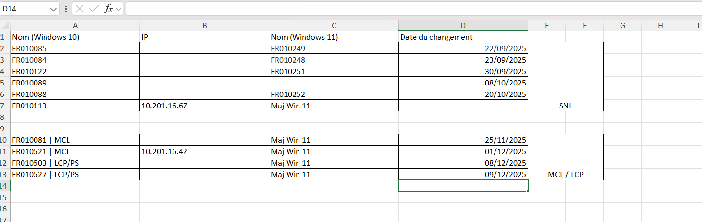
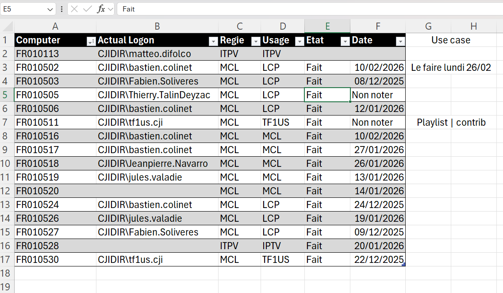

Gestion des PC de rebond
Contexte
Dans le cadre du renouvellement du parc informatique et du passage à Windows 11, j’ai participé au suivi et à la gestion des PC de rebond utilisés par les équipes techniques et les techniciens d’exploitation.
Ces postes permettent d’accéder à différents environnements techniques. Il était donc nécessaire de suivre leur remplacement, leur configuration, leur usage et leur attribution.
Objectifs
- Suivre la mise à niveau des PC vers Windows 11
- Identifier les anciens et nouveaux postes
- Associer chaque poste à un utilisateur ou un usage
- Suivre l’état d’avancement des configurations
- Centraliser les informations dans un tableau de suivi
Environnement technique
Travaux réalisés
Suivi du remplacement des postes
Création d’un tableau permettant de faire le lien entre les anciens postes Windows 10 et les nouveaux postes Windows 11, avec la date de changement.
Suivi des configurations
Vérification de l’état des postes, suivi des configurations terminées et identification des postes restants à préparer.
Association aux utilisateurs
Renseignement du compte de connexion, de la régie, de l’usage du poste et du cas d’utilisation afin de garder une traçabilité claire.
Organisation du déploiement
Planification des interventions et suivi des dates de migration pour limiter l’impact sur les utilisateurs et les équipes de production.
Preuves et tableaux de suivi
Suivi du passage Windows 10 vers Windows 11
Ce tableau permet de suivre les anciens noms de postes Windows 10, les nouveaux postes Windows 11 et les dates de changement.

Suivi des PC de rebond configurés
Ce tableau recense les PC de rebond, leur utilisateur, leur régie, leur usage, leur état de configuration et la date de traitement.

Résultats obtenus
Impact utilisateur
- Postes de rebond disponibles et fonctionnels
- Migration progressive vers Windows 11
- Meilleure visibilité sur les postes déjà traités
- Réduction des oublis grâce au suivi centralisé
Impact entreprise
Le suivi des PC de rebond a permis de mieux organiser le renouvellement des machines, de contrôler leur état de configuration et de conserver un historique clair des postes utilisés par les équipes.
Compétences mobilisées
- Support aux utilisateurs
- Gestion des incidents et des demandes
- Administration système et réseau
- Suivi de parc informatique
- Configuration de postes Windows
- Organisation et traçabilité des interventions
Bilan personnel
Cette mission m’a permis de participer à un renouvellement de parc et de comprendre l’importance d’un suivi clair lors d’une migration vers un nouvel environnement système.
J’ai également renforcé mes compétences en organisation, en support utilisateur et en gestion de postes dans un contexte professionnel.